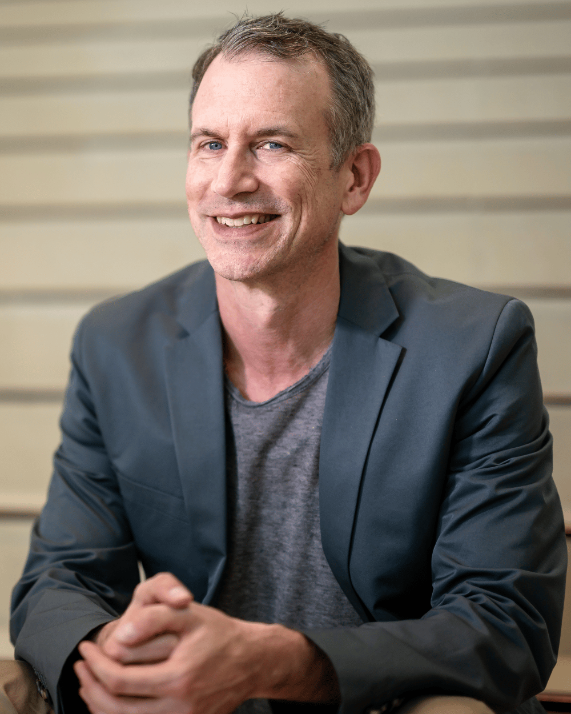
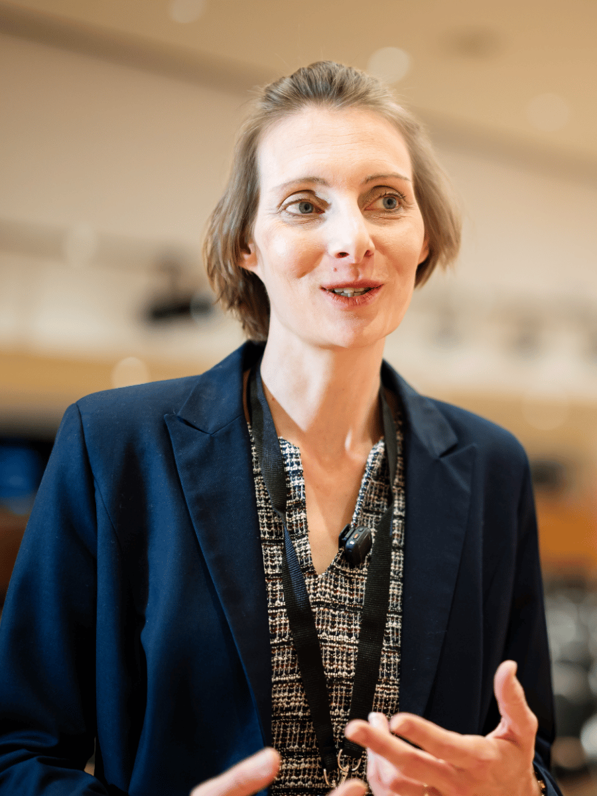

Ein Gutschein, kein Kredit
Der AVGS ist eine Förderleistung. Du zahlst nichts zurück und trägst keinen Eigenanteil – auch dann nicht, wenn ein Gutschein ungenutzt verfällt.
Kostenfrei über deinen AVGS-Gutschein
Du hast einen Aktivierungs- und Vermittlungsgutschein (AVGS) der Agentur für Arbeit oder des Jobcenters – oder möchtest einen beantragen? Ich begleite dich persönlich und individuell auf dem Weg in deine Selbstständigkeit. Für dich kostenfrei, denn der Gutschein übernimmt die Kosten vollständig. Beziehst du Arbeitslosengeld I, bereiten wir gemeinsam auch deinen Antrag auf den Gründungszuschuss vor.
Persönlich in Düsseldorf und Hofbieber bei Fulda – auf Wunsch auch online.

AVGS-Gründungscoaching
Im AVGS-Gründercoaching arbeiten wir gemeinsam an dem, was deine Selbstständigkeit wirklich trägt: einer geschärften Geschäftsidee, einem belastbaren Businessplan und einem realistischen Plan für die ersten Monate. Kein Standardprogramm, sondern Termine, die sich an deinem Vorhaben und deinem Tempo orientieren.
Für Menschen, die arbeitssuchend oder von Arbeitslosigkeit bedroht sind und den Schritt in die Selbstständigkeit gehen möchten – ob die Idee schon steht oder noch Form annehmen muss. Du hast bereits einen AVGS? Dann können wir direkt starten. Du hast noch keinen? Dann bereiten wir gemeinsam das Gespräch mit deiner Ansprechperson im Amt vor.
Dein Vorteil: Als Teilnehmerin oder Teilnehmer zahlst du nichts. Die Kosten des AVGS-Gründungscoachings trägt vollständig die Agentur für Arbeit beziehungsweise das Jobcenter über deinen Gutschein.
Wir setzen die Schwerpunkte dort, wo du im Moment die größten Fragen hast.
Mehr zum Gründungszuschuss und was wir dafür gemeinsam machen
Was ist der AVGS?
AVGS steht für Aktivierungs- und Vermittlungsgutschein. Er ist in § 45 SGB III geregelt und wird von der Agentur für Arbeit oder dem Jobcenter ausgestellt. Der Gutschein finanziert Maßnahmen, die deine berufliche Eingliederung unterstützen – darunter die Heranführung an eine selbstständige Tätigkeit, also ein Gründungscoaching.
Der AVGS ist eine Förderleistung. Du zahlst nichts zurück und trägst keinen Eigenanteil – auch dann nicht, wenn ein Gutschein ungenutzt verfällt.
Die Maßnahme „Heranführung an eine selbstständige Tätigkeit" ist auf dein Vorhaben zugeschnitten. Wir arbeiten in persönlichen Einzelterminen.
Nach der Ausstellung ist ein AVGS nur einige Monate gültig. Innerhalb dieser Frist muss die Maßnahme starten – meld dich also frühzeitig.
AVGS steht für Aktivierungs- und Vermittlungsgutschein. Er ist ein Förderinstrument nach § 45 SGB III, das die Agentur für Arbeit oder das Jobcenter ausstellt. Mit dem Gutschein werden Maßnahmen zur beruflichen Eingliederung finanziert – unter anderem die Heranführung an eine selbstständige Tätigkeit, also ein Gründungscoaching.
Infrage kommen grundsätzlich Menschen, die arbeitslos oder von Arbeitslosigkeit bedroht sind oder Arbeit suchen. Der AVGS ist in der Regel eine Ermessensleistung: Ob im Einzelfall ein Gutschein ausgestellt wird, entscheidet die Agentur für Arbeit beziehungsweise das Jobcenter individuell. Ein Rechtsanspruch besteht in der Regel nicht.
Als Teilnehmerin oder Teilnehmer ist das Coaching für dich kostenfrei. Die Kosten werden vollständig über den AVGS von der Agentur für Arbeit oder dem Jobcenter getragen. Ein Eigenanteil fällt nicht an. Auch das Erstgespräch ist kostenfrei und unverbindlich.
Sprich mit deiner Ansprechperson bei der Agentur für Arbeit oder im Jobcenter über deinen Wunsch nach einem Gründungscoaching und begründe, warum die Maßnahme deine berufliche Eingliederung unterstützt. Ein Tipp: Wenn möglich sprich mich vor dem Termin an. Ich stelle dir ein Empfehlungsschreiben aus, mit dem die Wahrscheinlichkeit auf einen AVGS höher ist. Zudem ist es mit dieser Empfehlung möglich eine höhere Stundenzahl zu bekommen.
Am Anfang steht ein kostenfreies Erstgespräch zum Kennenlernen und zur Klärung deiner Ziele. Anschließend arbeiten wir in individuellen Einzelterminen an deinem Vorhaben: Geschäftsidee schärfen, Businessplan erstellen, Markt und Wettbewerb analysieren, Marketing und Vertrieb aufbauen sowie die konkreten Gründungsschritte planen. Inhalte und Umfang richten sich nach deinem Bedarf und dem bewilligten Gutschein.
Der AVGS finanziert das Coaching, also die Beratung und Vorbereitung auf dem Weg in die Selbstständigkeit. Der Gründungszuschuss nach § 93 SGB III ist dagegen eine finanzielle Unterstützung zum Lebensunterhalt nach der Gründung und richtet sich an Empfängerinnen und Empfänger von Arbeitslosengeld I. Beides lässt sich kombinieren: Im AVGS-Coaching bereiten wir unter anderem deinen Antrag auf den Gründungszuschuss vor.
Ja. Im Coaching gehen wir die Antragsformulare Punkt für Punkt gemeinsam durch, stellen die erforderlichen Antragsunterlagen zusammen – Businessplan, Finanzplanung, Lebenslauf und Nachweise – und füllen den Antrag zusammen aus. Auch die fachkundige Stellungnahme zur Tragfähigkeit des Vorhabens wird vorbereitet; sie kann über den zugelassenen Bildungsträger erfolgen.
Nein. Der Gründungszuschuss nach § 93 SGB III ist eine Kann-Leistung: Über die Bewilligung entscheidet die Agentur für Arbeit im Einzelfall, ein Rechtsanspruch besteht nicht. Beeinflussen lassen sich die Qualität der Antragsunterlagen und der Zeitpunkt der Antragstellung – genau daran arbeiten wir im Coaching.
Ein AVGS ist nach der Ausstellung nur für einen begrenzten Zeitraum gültig – üblicherweise einige Monate. Innerhalb dieser Frist muss die Maßnahme beginnen. Die konkrete Gültigkeitsdauer steht auf deinem Gutschein. Meld dich deshalb frühzeitig, damit wir den Start rechtzeitig planen können.
Ob in deinem Fall ein Anspruch besteht, entscheidet die Agentur für Arbeit oder das Jobcenter individuell. Diese Seite informiert allgemein und ersetzt keine Rechtsberatung.
Ablauf
Vom ersten Gespräch bis zum Start: Du weißt jederzeit, was als Nächstes ansteht. Den Papierkram rund um Gutschein und Gründungszuschuss gehen wir gemeinsam durch – du musst dich nicht allein durch Formulare arbeiten.
Noch kein Gutschein? Kein Problem. Das Erstgespräch ist unabhängig vom AVGS kostenfrei. Wir klären darin, ob ein Gründungscoaching für dich sinnvoll ist und wie du es bei deiner Ansprechperson im Amt begründen kannst.
Wir lernen uns kennen, du schilderst dein Vorhaben, wir klären deine Ziele und ob ein AVGS-Coaching der richtige Weg ist. Unverbindlich und ohne Kosten.
Du sprichst mit der Agentur für Arbeit oder dem Jobcenter über den Gutschein. Ich helfe dir bei der Begründung. Liegt der AVGS bereits vor, lösen wir ihn direkt ein.
In persönlichen Terminen arbeiten wir an Geschäftsidee, Businessplan, Markt und Wettbewerb, Marketing und Vertrieb – mit den Schwerpunkten, die du brauchst.
Beziehst du Arbeitslosengeld I? Dann gehen wir die Antragsformulare gemeinsam durch, stellen die Antragsunterlagen zusammen und füllen den Antrag zusammen aus. Die fachkundige Stellungnahme kann über den zugelassenen Bildungsträger erfolgen.
Formalitäten, Rechtsform, Anmeldungen und Versicherungen – wir klären gemeinsam, was vor dem Start noch zu erledigen ist.
Du gehst an den Markt – mit einem durchdachten Konzept, klaren nächsten Schritten und dem nötigen Rüstzeug für die ersten Monate.
Gründungszuschuss
Für viele ist das AVGS-Coaching der Weg zu einer zweiten Förderung: dem Gründungszuschuss nach § 93 SGB III. Er sichert deinen Lebensunterhalt in den ersten Monaten nach der Gründung. Genau darauf arbeiten wir hin – und den Antrag füllen wir gemeinsam aus.
Wichtig zu wissen: Der Gründungszuschuss ist eine Kann-Leistung. Über die Bewilligung entscheidet die Agentur für Arbeit im Einzelfall, ein Rechtsanspruch besteht nicht. Beeinflussen lassen sich die Qualität deiner Unterlagen und der richtige Zeitpunkt – und genau daran arbeiten wir.
Der AVGS finanziert das Coaching, der Gründungszuschuss sichert danach deinen Lebensunterhalt. Beide Förderungen lassen sich kombinieren.
Über uns
Du arbeitest nicht mit einem anonymen Bildungsanbieter zusammen, sondern mit Menschen, die selbst gegründet, verkauft und aufgebaut haben – und die wissen, wie sich der erste Schritt anfühlt.

Nach der Ausbildung zum Speditionskaufmann in Fulda studierte Johannes Röder Betriebswirtschaftslehre mit den Schwerpunkten Marketing und Personalwesen. Beruflich führte ihn der Weg über Sylt, Hamburg und Köln; heute lebt und arbeitet er in Düsseldorf und in Hofbieber bei Fulda.
Viele Jahre war er in großen Media-Agenturen tätig – unter anderem bei Group M und der Omnicom Media Group – und beriet Konzerne wie REWE und die Daimler-Gruppe in Media- und Marketingstrategien. Seine eigene Selbstständigkeit begann mit Vertriebsunterstützung; unter anderem begleitete er Radio Antenne Sylt in der Gründungsphase.
Heute verbindet er diese Erfahrung zu einem ganzheitlichen Blick auf Unternehmensziele: Prozessoptimierung, Digitalisierung, Fördermittelberatung – und vor allem AVGS-Gründungscoaching. Das Erstgespräch ist bei ihm immer kostenfrei.

Gesa Gröning ist Werbekauffrau (IHK) und studierte Moderationstechnik und Medienpräsentation. Nach einem Volontariat als TV-Redakteurin ist sie heute Ausbilderin (AEVO) und Prüferin bei der DIHK für Veranstaltungsfachwirte in den Bereichen Akquise und Marketing.
Sie hat IMMO TV und Antenne Sylt mit aufgebaut. Aus Moderation und Redaktion bringt sie eine Stärke mit, die in der Akquise entscheidend ist: Sie hört zu, stellt die richtige Frage und bleibt souverän, wenn ein Gespräch einmal unerwartet verläuft.
Daneben ist sie Inhaberin der Partnermarke „Medien für Sie – Moderatorin Gesa Gröning" mit den Schwerpunkten Video-Produktion, Moderation und Corporate TV.
Zusammenarbeit mit zugelassenen Bildungsträgern: Die AVGS-Maßnahmen führe ich in Zusammenarbeit mit zugelassenen Bildungsträgern durch – unter anderem als Regionalpartner der Erfolgspfad GmbH (AZAV- und AVGS-zertifiziert). Ich bin selbstständig und unabhängig tätig, weder angestellt noch exklusiv an einen Träger gebunden. Die AVGS- beziehungsweise AZAV-Zulassung liegt beim jeweiligen Bildungsträger.
Weitere Leistungen
Neben dem AVGS-Gründungscoaching unterstütze ich Unternehmerinnen und Unternehmer in den Themen, die im Alltag über Wachstum entscheiden.
Beratung zu passenden Förderprogrammen, Auswahl regionaler und bundesweiter Fördermittel, Unterstützung bei der Beantragung und Vorbereitung auf Bankgespräche.
Prozesse digitalisieren, die Online-Präsenz auf- und ausbauen, digitales Know-how im Team stärken sowie KI-Integration und Dashboard-Lösungen einführen.
Unternehmens- und Marktanalyse, Marketing und Vertrieb, New Business und strategische Weiterentwicklung – vom Konzept bis in die Umsetzung.
Bewertungen
Stimmen aus Gründungsberatung, Marketing, Vertrieb und Akquise.
Johannes hat mir im Zuge meiner Gründung bei der Erstellung und beim Feintuning eines Businessplans geholfen. Es war eine sehr angenehme Zusammenarbeit, und Johannes hat es geschafft, meine ganzen Infos zu meinem Business sauber und strukturiert aufzubereiten. Der Zahlenteil in der Exceltabelle? Dafür hätte ich vermutlich Monate gebraucht. Und das Ergebnis spricht für sich: Gründungszuschuss erhalten – auch, weil die Form einfach hervorragend war. Solltest du hier Unterstützung brauchen: klare Empfehlung.
Ich habe ein Recruiting-Unternehmen für Fachkräfte aus Indien für die Bereiche Soziales, Gesundheit und Handwerk gegründet. Mit Johannes habe ich meinen Businessplan erstellt, Fördermittel beantragt und meine Ideen für die Vermarktung ausformuliert. Danke für konstruktive Zeit, die tollen Ideen und für die vielen KI-Anleitungen. Gerne empfehle ich dich weiter.
Johannes hat mich auf meinem Weg in die Selbstständigkeit hervorragend begleitet – inklusive Sparring zur strategischen Ausarbeitung des Geschäftsmodells, der Erstellung des Businessplans sowie beim Online-Marketing. Wichtig war mir, Künstliche Intelligenz in diese Bereiche zu integrieren. Vielen Dank an Johannes für eine strukturierte und praxisnahe Beratung voller wertvoller Impulse!
Dank der großartigen Unterstützung von Johannes konnte ich meinen Traum vom eigenen koreanischen Restaurant in Düsseldorf verwirklichen. Er hat mit mir den Businessplan erstellt, die Marketing-Strategie entwickelt und mich optimal auf die Beantragung der Fördergelder vorbereitet – mit Erfolg! Besonders wertvoll war für mich auch, wie viel ich über die Steuerung meines eigenen Unternehmens gelernt habe. Die Beratung war erstklassig – absolut empfehlenswert!
Johannes hat uns sehr schnell und professionell geholfen, unsere Akquise auf das nächste Level zu bringen. Unsere Erwartungen wurden übertroffen!
Gute Adresse! Bei all meinen Fragen zu Vertrieb und Marketing gab es kompetente Antworten.
Johannes hat unsere Akquise sehr gut unterstützt. Wir schätzen das breite Spektrum und die Weitsicht bei strategischen Ansätzen.
Kontakt
Nenn mir dein Anliegen – ich melde mich innerhalb von 24 Stunden bei dir. Das Erstgespräch ist kostenfrei und unverbindlich, auch wenn du noch keinen AVGS-Gutschein hast.
Pflichtfelder. Die Übermittlung erfolgt über Formspree; Details in der Datenschutzerklärung.